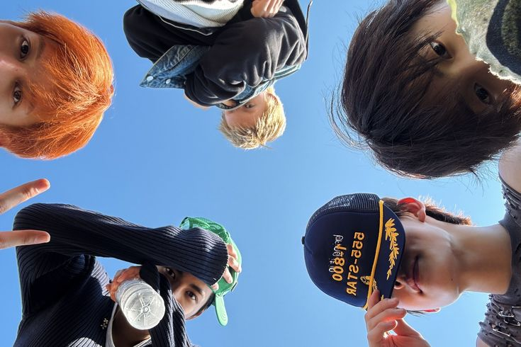

Hello everyone, my name is Alfianty Wahidah Putri
I'm 16 years old, I was born on 1st of May 2010 (specifically on Saturday night at 08.48 pm).
My favorite food is ayam geprek and Gacoan (mie level 6, udang keju, and udang rambutan!) because it's so yummy.
I want to be an neuro-oncology's doctor one day, I want to make them to be cancer free and have a nice daily life.
I also like to join social activity like volunteer, self-development program, webinar, etc.
I love K-Pop, actually I am on rest in K-Pop world because I think there's no interesting things anymore in K-Pop nowadays, In other words, I've lost sparks in K-Pop until I found Cortis. I stan Cortis since September 2025, because of Cortis, now I like K-Pop again and stan another group like KiiiKiii, LNGSHT, and Hearts2Hearts
| No | University | City | Country | Major | Link |
|---|---|---|---|---|---|
| 1 | University of Edinburgh | Edinburgh | Scotland | Medicine | Click this |
| 2 | Monash University Malaysia | Bandar Sunway | Malaysia | Medicine | Click this |